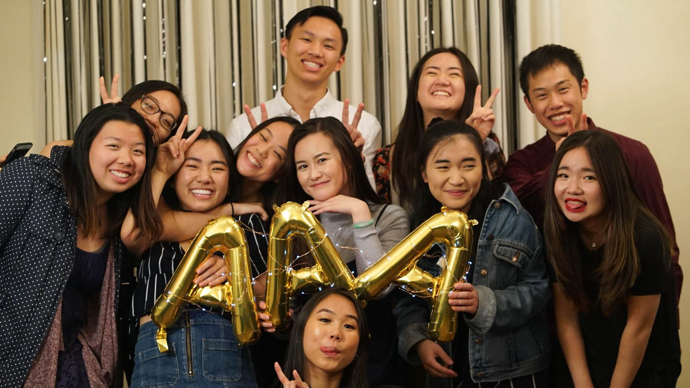
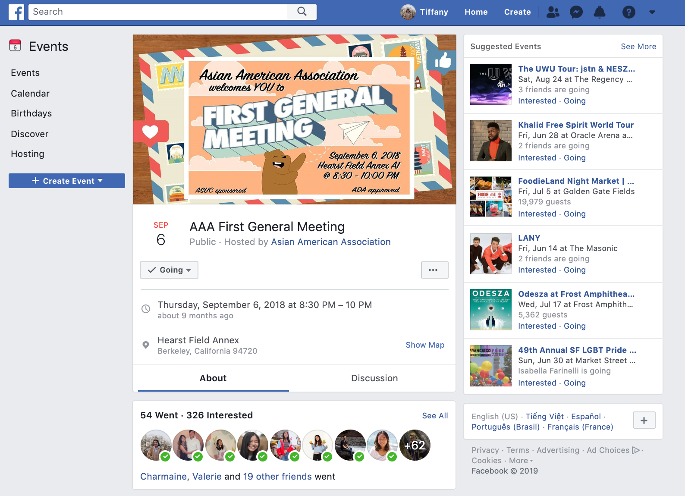
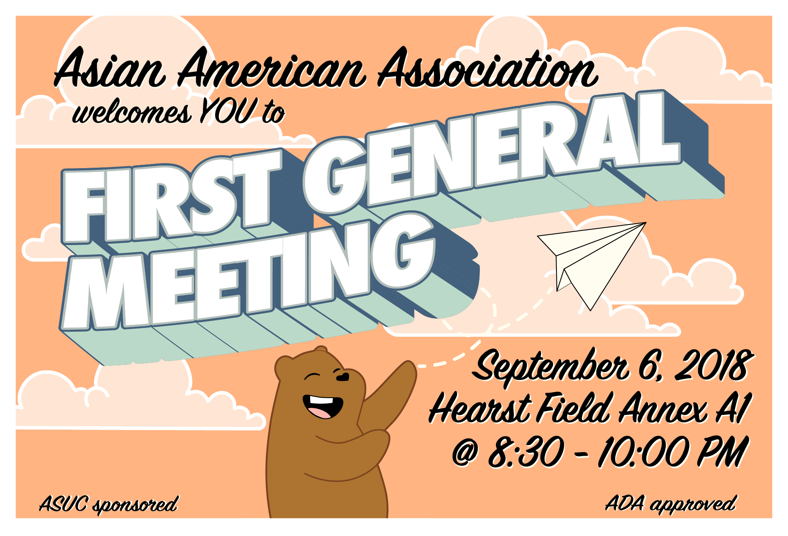
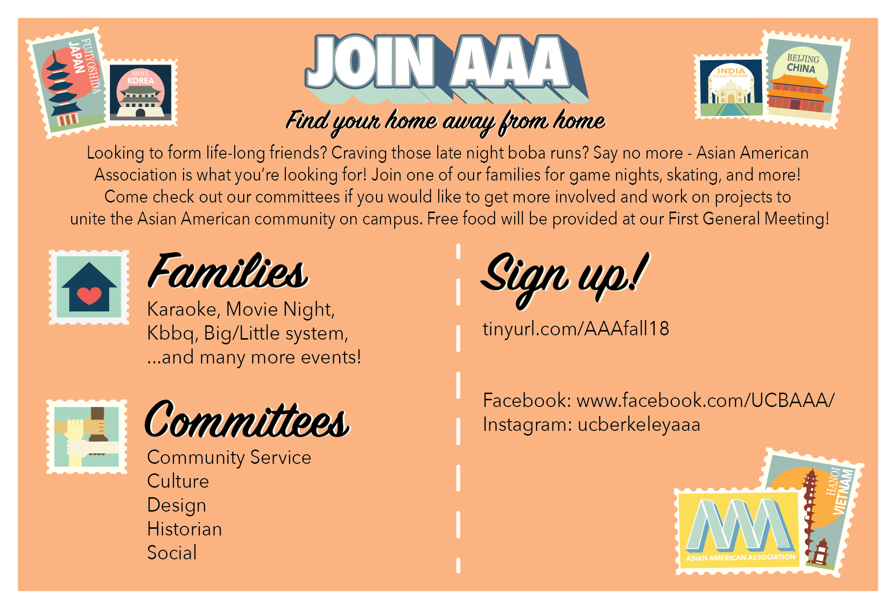

GRAPHIC DESIGN / GRAPHIC ILLUSTRATION
At the forefront of uniting the Asian American community at Berkeley.
Asian American Association seeks to develop proactive and community-oriented leaders through a social, educational awareness, and service network. It enhances the quality of life at Berkeley through its focus on diversity appreciation. As a graphic designer and design lead, I aided in providing the art direction to the organization.
Role
Graphic IllustratorGraphic Designer
Design Lead
Team
Committee of 13Tools
Adobe IllustratorKeynote
Timeline
Feb 2018 to May 2019

Spring 2019 Design Team. Photo taken by Jared Tan.
BACKGROUND
As a Graphic Designer under a lead,
I co-designed banner, flyers, and photo filters for the organization's upcoming social events. During weekly meetings, I was taught the basics of Illustrator to create innovative and eye-catching designs. I also promoted and attended social events, aimed to provide an Asian American community at the University of California, Berkeley. With the effort and work ethic put into this organization as a member, I was awarded as Design Committee Member of the semester. In aims to expand both my leadership, teamwork, and graphic design skills, I furthered my time in the organization by being a Design Committee Chair.Being a Design Lead,
I provided the art direction of the organization. I created the First General Meeting marketing graphics to encourage past members and interested students to join the large cultural and social organization. I also lead and worked with a committee of 13 to 15 members to develop graphics for the professional and social events. With team weekly meetings, I instructed weekly tutorials to enable my committee members to further advance in Adobe Illustrator and Photoshop.FIRST GENERAL MEETING
First General Meeting was a campus-wide event that focused on informing and attracting new and old members to join the organization. During the event, the board went over exciting upcoming events that we had planned for the current semester.



REFLECTION
Initially, I created four different design bundles for the board to choose from and this was the one where they felt would most likely entice future members for the club as well as captivating the mission of the club - to provide an Asian American space on campus as well as educating others on Asian American identity. The idea - “Home Away From Home” - was what I felt would be geared towards incoming freshmen and transfers.
I had tons of fun with the designs, especially thinking about my audience in terms of of inclusivity and their perspective in terms of going to college being near or away from home. With these designs, I also aimed to attract both new and old members to join my design committee.
I had tons of fun with the designs, especially thinking about my audience in terms of of inclusivity and their perspective in terms of going to college being near or away from home. With these designs, I also aimed to attract both new and old members to join my design committee.
GRAPHICS I WORKED ON INDIVIDUALLY


GRAPHICS I WORKED ON WITH MY TEAM

Graphics made with Spring 2019 Design Team.

Stickers made by Spring 2019 Design Team. Banner made by me.

Graphics made with Spring 2018 Design Team.